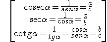

En un triángulo rectángulo y uno de sus ángulos agudos es α, definimos su seno, coseno y tangente como:
\[\begin{align} & sen\alpha =\frac{c}{a}=\frac{\text{cateto opuesto}}{\text{hipotenusa}} \\ & \cos \alpha =\frac{b}{a}=\frac{\text{cateto adyacente}}{\text{hipotenusa}} \\ & tg\alpha =\frac{c}{b}=\frac{\text{cateto opuesto}}{\text{cateto adyacente}}=\frac{sen\alpha }{\cos \alpha } \\ \end{align}\]
Y sus razones inversas, cosecante, secante y cotangente:

\[\begin{align} & \text{cosec}\alpha =\frac{1}{sen\alpha }=\frac{a}{c} \\ & \sec \alpha =\frac{1}{\cos \alpha }=\frac{a}{b} \\ & \text{cotg}\alpha =\frac{1}{tg\alpha }=\frac{\cos \alpha }{sen\alpha }=\frac{b}{c} \\ \end{align}\]
Si aplicamos el Teorema de Tales, se comprueba que las razones no dependen de las longitudes de los lados:
Ejemplo : 30o y 60o
Ejercicio:
1.- Calcula las siguientes razones trigonométricas:
a) sen 15o 45' 40''
b) tg 191o 15' 12''
2.- Calcula los ángulos sabiendo que:
a) sen α = 0,37
b) cos β = 0,8
3.- En un triángulo rectángulo, los catetos miden 3 y 4 y la hipotenusa 5. Calcula las razones de los ángulos agudos.
Soluciones:
1.- a) 0,27; b) 0,198
2.- a) 21o 42' 56''; b) 38o 39' 35''
3.- senα = cosβ = 3/5; cosα = senβ = 4/5; tgα = cotgβ = 3/4